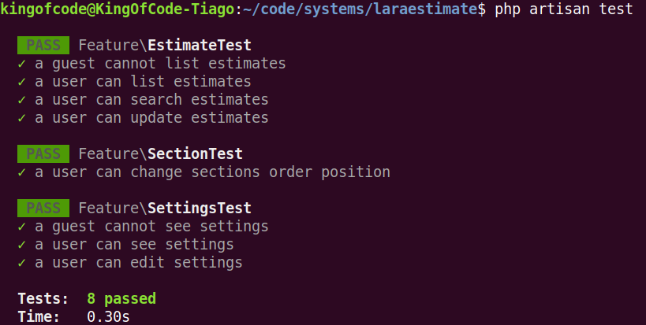

About the Code Style and Organization
LaraEstimate was made with Laravel 7 and VueJS for FrontEnd. The system is not a SPA, but a hybrid application that uses the power of Server Side Rendering and the power of JavaScript and Ajax for some features.
We have adopted some code conventions and patterns to keep the code quality. Let's see it below:
1. Services
To keep the code organization and reduce the code duplication through the system, we used Service Classes that abstract the system logic.
2. JavaScript Settings Object
To pass some settings to the JavaScript, we used the view file: resources/views/layouts/app-data.blade.php. Currently, all the settings inside this file are messages passed from Session to the Javascript (to show toasts, etc):
<script>
window.App = {
'localizationData': @json($localizationData),
'messages': {
'success': '{{ Session::get("success") }}',
@if($errors->any())
'errors': @json($errors->all())
@endif
},
}
</script>
3. Tests
We wrote tests for all important features on LaraEstimate. With these tests, you can assert the system keeps working after some modifications.
To run the basic Feature and Unit tests, you can run:
php artisan test
Te result would be something like:

To test the interface and Estimates interaction, we used the awesome Laravel Dusk Tool. To run Laravel Dusk tests, firstly copy the .env.dusk.local.example file to a new file called .env.dusk.local.
Then, set in this newly created file the URL that you will use when executing the tests, for example, we can set the URL using the port 8009:
APP_URL=http://localhost:8009
And create a file called testing_database.sqlite inside the /database folder. This file will be used by the connection sqlite_testing. Or, if you prefer, you can set up a new connection based on your preferences.
Then, run this command to start a new server for the Dusk Environment (use the port you set in the .env.dusk.local file):
php artisan serve --port=8009 --env=dusk.local
Finally, run the dusk tests:
php artisan dusk